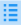
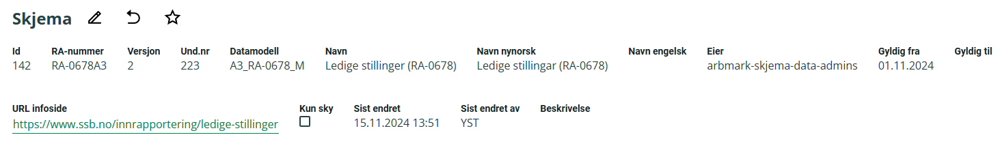

Administrasjon av skjema
SU-V tilbyr både et grafisk brukergrensesnitt (GUI) og en Python-pakke for administrasjon av skjemaer. Du kan få tilgang til GUI via følgende lenker:
Mer informasjon om Python-pakken finner du her.
Alle operasjoner og visninger som er tilgjengelige i GUI, kan også utføres ved hjelp av kode. Administrasjon av skjema innebærer håndtering av metadata knyttet til skjemaer, perioder, puljer og utsendinger.
Tilgang til skjema
Alle brukere har lesetilgang til skjemaene, noe som betyr at de kan se og hente data uten å gjøre endringer.
For å kunne utføre administrasjonsoppgaver og gjøre endringer knyttet til skjemaet, må du være medlem av data-admins eller developers i Dapla-teamet som eier skjemaet. Se mer om administrasjon av team her.
Hierarki for skjema administrasjon
Et skjema består av følgende strukturer:
- Skjema kan inneholde flere perioder.
- En periode kan inneholde flere puljer.
- En pulje kan inneholde flere utsendinger.
Illustrasjonen nedenfor viser sammenhengen mellom de ulike nivåene:
{kind=link}
Generelle UI operasjoner
Mange av skjermbildene i GUI tilbyr de samme typene operasjoner. Disse operasjonene er beskrevet i tabellen nedenfor.
Tabell 1 beskriver generelle UI operasjoner.
| Ikon | Forklaring |
|---|---|
| Legg til en ny rad. | |
| Redigere en rad. | |
| Kopiere en rad. | |
| Slett en rad. | |
|  | Vise detaljer for en rad. |
| Gå tilbake til forrige skjermbilde. |
{kind=link}
{kind=link}
{kind=link}
{kind=link}
{kind=link}
{kind=link}
Skjema
For å begynne å jobbe med et skjema, må du finne riktig skjemaversjon i skjemakatalogen.
Slik søker du fram et skjema
- Velg Skjemadata i venstremenyen.
- Bruk søkefeltet i det nye skjermbildet for å finne skjemaet ditt.
- Klikk på Vis detaljer-ikonet i søkeresultatet for å se mer informasjon om skjemaet.
Bildet nedenfor viser eksempel på søkebilde:
{kind=link}
Hvis du ikke finner riktig skjemaversjon, ta kontakt med planleggeren for skjemaet på seksjon 821.
Skjema metadata
Hvert skjema har tilknyttet metadata som gir detaljert informasjon om det. Bildet nedenfor viser et eksempel på metadata for et skjema: 
Tabell 2 beskriver metadatafeltene for et skjema
| Meta | Forklaring |
|---|---|
| RA-nummer | RA-nummer for skjemaet. |
| Versjon | Skjemaversjon. |
| Und.nr | Undersøkelsesnummer. |
| Datamodell | Navn på datamodellen. |
| Navn | Navn på undersøkelsen. |
| Navn nynorsk | Navn på undersøkelsen (nynorsk). |
| Navn engelsk | Navn på undersøkelsen (engelsk). |
| Eier | Dapla-team. |
| Gyldig fra | Fra hvilken dato undersøkelsen er gyldig. |
| Gyldig til | Til hvilken dato undersøkelsen er gyldig. |
| URL infoside | Informasjonsside for undersøkelsen. |
| Beskrivelse | Tilleggsinformasjon om undersøkelsen. |
Kodeeksempel
For å hente ut et skjema med tilhørende metadata i Python, kan du bruke metoden get_skjema_by_ra_nummer i SuvClient. Sørg for at du oppgir riktig RA-nummer og versjon.
notebook
client = SuvClient()
output = client.get_skjema_by_ra_nummer(
ra_nummer = "RA-0678A3",
versjon = 2
)
print(json.dumps(output, indent=4))Legge til skjema som favoritt
For å gjøre det enklere å finne skjemaene du jobber mest med, kan du legge dem til som favoritter. Dette er spesielt nyttig ettersom skjemakatalogen kan inneholde mange ulike skjemaer og versjoner.
Slik legger du til et skjema som favoritt:
- Søk opp skjemaet: Bruk søkefunksjonen for å finne skjemaet du ønsker.
- Vis detaljer: Klikk på skjemaet i tabellen for å åpne detaljvisningen.
- Legg til som favoritt: Trykk på stjerneikonet ved siden av skjemaets navn. Når stjernen er markert, er skjemaet lagt til som favoritt.
Skjemaet vil deretter være tilgjengelig under Favoritter i venstremenyen.
Bildet nedenfor viser hvordan du velger et skjema som favoritt:
{kind=link}
Periode
Et skjema kan ha en eller flere perioder knyttet til seg. Hvilke perioder som er lagt inn på skjemaet kan du se i detaljvisningen når du har valgt et skjema.
Administrasjon av utvalg og enheter
Administrasjon av utvalg og enheter skjer fortsatt fra SFU på bakke. Knytningen mellom skjemaet og bakkesystemene skjer ved at et delregister-nr registreres på perioden. Mer informasjon om håndtering av utvalg fra SFU finner du her.
Eksempel på skjema med periode
Bildet nedenfor viser eksempel på et skjema med en tilknyttet periode:
{kind=link}
Tabell 3 beskriver metadatafeltene for en periode
| Meta | Forklaring |
|---|---|
| Type | Undersøkelsestype (f.eks Kvartal, Måned, År). |
| Nr | Periode nummer. |
| År | Periode år. |
| Periode-dato | |
| Delreg-nr | Delregister-nummer i SFU som er tilknyttet perioden. |
| Enhet-type | Enhetstype (f.eks Bedrift, Foretak, Person). |
| Oppgavebyrde | Aktivere oppgavebyrde i skjemaet. |
| Brukeropplevelse | Aktivere oppgavebyrde i skjemaet. |
| Skjemadata | |
| Journalnummer |
Kodeeksempel
For å lage en ny periode, kan du bruke metoden create_periode i SuvClient.
notebook
client = SuvClient()
output = client.create_periode(
skjema_id = 142,
periode_type = 'KVRT',
periode_nr = 3,
periode_aar = 2024,
delreg_nr = 21130324,
enhet_type = 'BEDR'
)
print(output)For å hente ut perioder med tilhørende metadata i Python, kan du bruke metoden get_perioder_by_skjema_id i SuvClient. Sørg for at du oppgir riktig skjema_id.
notebook
client = SuvClient()
output = client.get_perioder_by_skjema_id(
skjema_id=142
)
print(json.dumps(output, indent=4))Pulje
En periode kan ha en eller flere puljer knyttet til seg. Hvilke puljer som er lagt inn på skjemaet kan du se i detaljvisningen når du har valgt en periode.
Eksempel på periode med pulje
Bildet nedenfor viser eksempel på en periode med en tilknyttet pulje:
{kind=link}
Tabell 4 beskriver metadatafeltene for en pulje
| Meta | Forklaring |
|---|---|
| Pulje | Pulje nummer. |
| Tilgjengelig fra | Angir fra når skjemaet er tilgjengelig for oppdragsgiver ute hos Altinn. |
| Svarfrist | Angir svarfrist for undersøkelsen. |
| Tvmulkt svarfrist | Angir svarfrist før utsendelse av tvangsmulkt. |
| Send SI |
Kodeeksempel
For å lage en ny pulje, kan du bruke metoden create_pulje i SuvClient.
notebook
client = SuvClient()
_altinn_tilgjengelig = datetime(2024, 11, 20, 14, 30, 0)
_altinn_svarfrist = datetime(2024, 11, 21)
_tvangsmulkt_svarfrist_ = datetime(2024, 11, 22)
_send_si = datetime(2024, 11, 23)
client.create_pulje(
periode_id = 24,
pulje_nr = 1,
altinn_tilgjengelig=_altinn_tilgjengelig,
altinn_svarfrist = _altinn_svarfrist,
tvangsmulkt_svarfris t= _tvangsmulkt_svarfrist_,
send_si = _send_si
)
print(output)For å hente ut pulje med tilhørende metadata i Python, kan du bruke metoden get_pulje_by_periode_id i SuvClient. Sørg for at du oppgir riktig periode_id.
notebook
client = SuvClient()
output = client.get_pulje_by_periode_id(
periode_id = 99
)
print(output)Utsending
En pulje kan ha en eller flere utsendinger knyttet til seg. Hvilke utsendinger som er lagt inn på puljen kan du se i detaljvisningen når du har valgt en pulje.
Eksempel på pulje med utsending
Bildet nedenfor viser eksempel på en pulje med en tilknyttet utsending:
{kind=link}
Tabell 5 beskriver metadatafeltene for en utsending
| Meta | Forklaring |
|---|---|
| Utsendingstype | Angir type utsending (f.eks instansiering). |
| Trigger | Angir trigger for utsending (Manuell, Auto, Ekstern). |
| Test | Angir testutsending (sendes ikke til utvalg) |
| Send ut | Angir tidspunkt for utsendelse. |
Send nå
Ønsker du å gjøre en utsending umiddelbart må dette gjøres fra GUI.
Slik gjør du en utsending umiddelbart:
- Velg Skjemadata i venstremenyen.
- Bruk søkefeltet i det nye skjermbildet for å finne skjemaet ditt.
- Klikk på Vis detaljer-ikonet i søkeresultatet for å se mer informasjon om skjemaet.
- Finn ønsket periode og velg Vis detaljer-ikonet i søkeresultatet for å se mer informasjon om perioden.
- Finn ønsket utsending og velg Vis detaljer-ikonet i søkeresultatet for å se mer informasjon om utsendingen (eventuelt så kan du opprette en helt ny utsending).
- Trykk “Send nå”.
{kind=link}
For å sende til én eller flere spesifikke enheter, kan du oppgi organisasjonsnumrene som en kommaseparert liste. Eksempel: 123456789, 987654321. Dersom ingen enheter oppgis, vil utsendingen automatisk gjelde for hele puljen.
Kodeeksempel
For å lage en ny utsending, kan du bruke metoden create_utsending i SuvClient.
notebook
client = SuvClient()
_altinn_uts_tidspunkt = datetime(2024, 11, 20, 14, 30, 0)
output = client.create_utsending(
pulje_id = 75,
utsendingstype_navn = 'instansiering',
altinn_uts_tidspunkt = _altinn_uts_tidspunkt
)
print(output)For å hente ut utsending med tilhørende metadata i Python, kan du bruke metoden get_utsending_by_id i SuvClient. Sørg for at du oppgir riktig utsending_id.
notebook
client = SuvClient()
output = client.client.get_utsending_by_id(
utsending_id = 133
)
print(output)